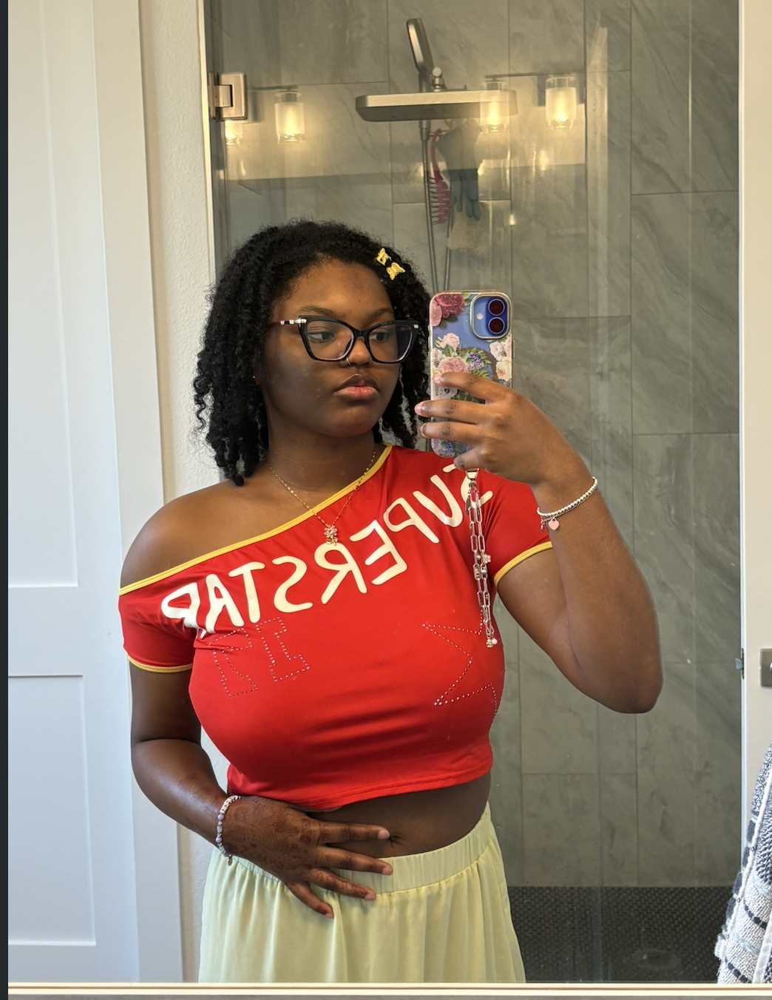

Hi! My name is Asia Kimbreyale Graves, and I'm a junior Media Arts and Design major at the University of Texas at Dallas. I love to draw and design all forms of media, so this major is a perfect fit for me.
1. Alabama State University (2024-2025) 2. University of Texas at Dallas (2025-Present)
1. Social Media Marketing Internship at Crates.Ing
1. Creative Design
2. Media Analysis
3. Artistic Direction
1. Linkedin Figma Certificate
